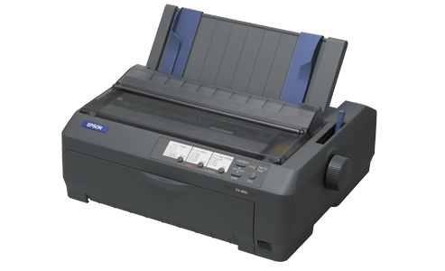

LAS IMPRESORAS - CLASIFICACIÓN
¿Qué es?
Una impresora o dispositivo de impresión es un periférico que, cuando conectado a una computadora o a una red de computadoras mediante cableado o conexión inalámbrica, ofrece la posibilidad de imprimir sobre papel u otros tipos de sustrato los textos o gráficos producidos por una aplicación. Heredando la tecnología de las máquinas de escribir, las impresoras sufrieron importantes modificaciones a lo largo del tiempo. En esto tuvo mucho que ver la evolución de las interfaces gráficas de usuario, de la mano de sistemas operativos como Windows y Mac. En este post conoceremos las más importantes tecnologías de impresión de la actualidad.
Tipos de impresoras
Las impresoras son típicamente clasificadas teniendo en cuenta características como la escala cromática que es capaz de imprimir, es decir en colores o blanco y negro, el tipo de conexión, la cantidad de páginas por minuto que son capaces de procesar e imprimir y el tipo específico de tecnología que utiliza para ello. Con respecto al tipo de conexión, existen varios protocolos para imprimir como Ethernet, inalámbrico por Wi-Fi, puerto paralelo y USB, siendo este último el más moderno y utilizado de la actualidad. En los siguientes párrafos conoceremos los distintos tipos de impresoras que podemos encontrar en el mercado y sus características principales:
-
Impresoras de Matriz de Puntos:
Uno de los ejemplos de impresora de matriz de puntos más conocidos es el de la EPSON LX-300, y es una tecnología de impresión que se basan en el principio de la decalvación, es decir que la impresión se produce al golpear una aguja o una rueda de caracteres contra una cinta con tinta. El resultado del golpe es la impresión de un punto o un carácter en el papel que está detrás de la cinta. Prácticamente ya nadie las utiliza hoy en día, ya que han sido sobrepasadas en tecnología y capacidad por las impresoras de chorro de tinta.
 -
Impresoras de chorros de tinta::
Una de las tecnologías de impresión más utilizadas y extendidas, ya que son baratas de mantener y fáciles de operar. Estas impresoras imprimen utilizando uno o varios cartuchos de tinta diferentes, que suelen ser Cian, Magenta, Amarillo y Negro, pigmentos habitualmente utilizados en la impresión offset, y que nos garantía una excelente calidad en las impresiones. llegando a tener en ocasiones una calidad semejante a las impresiones laser en color.
-
Impresoras láser:
Uno de los rasgos más importante cuando hablamos de impresoras láser, es sin duda alguna la calidad que se obtiene en las impresiones, calidad que en los últimos años ha sido ampliamente utilizada para las imprentas de pequeño porte. Actualmente podemos encontrar en el mercado impresoras láser realmente económicas, y con características que sorprenden. Los usos más habituales de la impresora láser son el comercio, pequeña oficina, imprenta, diseño gráfico y todos aquellos lugares en donde se requiera grandes volúmenes de impresión a alta velocidad.
-
Impresoras de tinta sólida:
La tinta sólida es básicamente cera. Las barras de tinta sólida son exactamente eso: barras sólidas de tinta. Cuando se insertan en una impresora de tinta sólida e imprimen, las barras se calientan hasta el punto de fusión y la tinta se transfiere al papel para producir la imagen impresa. Por esta razón, si alguna vez observas una página impresa con una impresora de tinta sólida, la textura de la impresión se siente cerosa al tacto.
-
Plotters:
Este tipo de tecnología es ampliamente utilizada en la actualidad para realizar toda clase de proyectos publicitarios tales como gigantografías, además de cartelería comercial y publicitaria en tamaños extra grandes. Esta es una herramienta que le permite al usuario realizar dibujo de planos en proyectos de impresión de grandes dimensiones, ya que algunos modelos son capaces de imprimir hasta 160 cm de ancho. Otra de los usos frecuentes de los plotters, también llamados trazadores, es en el ámbito de la arquitectura para el dibujo de planos.
-
Impresoras térmica:
La impresión térmica es una técnica en la que se produce una imagen impresa en papel o lámina con un recubrimiento termosensible mediante la aplicación de calor mediante un cabezal de impresión controlado. Para ello se utilizan cintas de tinta y películas de transferencia térmica. En el caso de la impresión térmica directa, el calor del calor térmico se aplica directamente al papel sensible al calor. Esto provoca una reacción química en la capa especial sensible al calor del material laminado.
-
Impresoras 3D:
Los equipos 3D han revolucionado el concepto de impresión, ya que permiten imprimir todo tipo de objetos a partir de un diseño. Las aplicaciones son múltiples: desde el campo de la medicina, con la construcción de prótesis y otros elementos similares, a los sectores industriales que requieren piezas específicas para su funcionamiento.